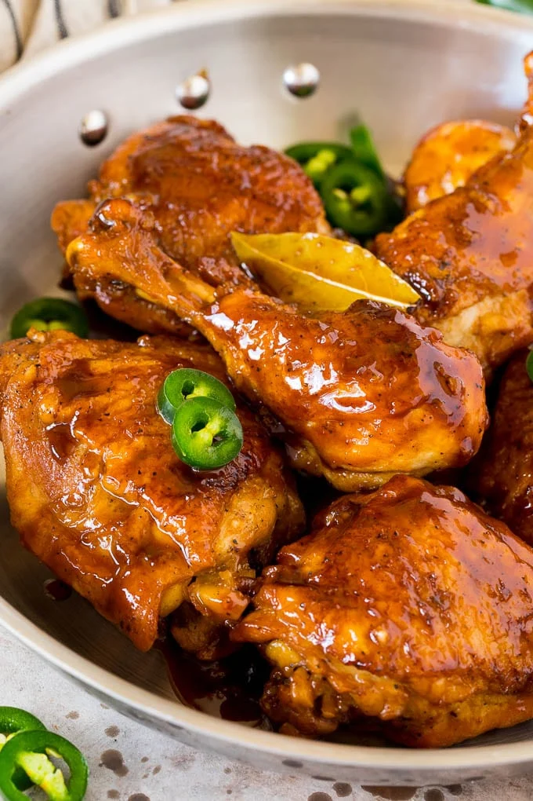
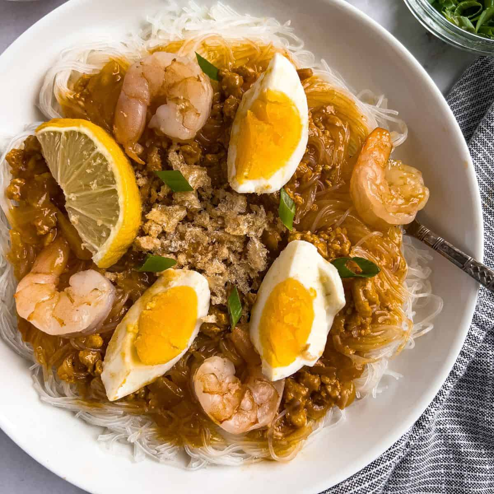
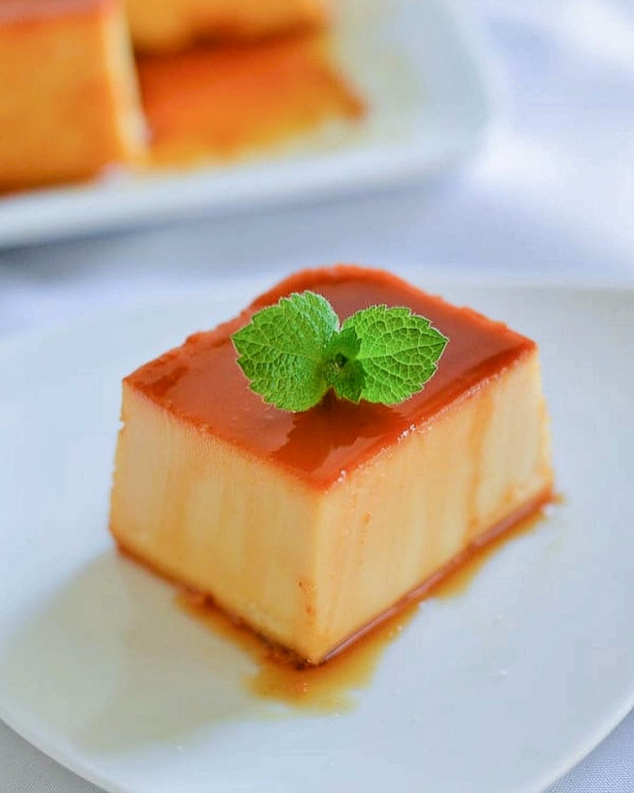

LUMPIA

Also known as spring roll. Mix meat and vegetables and served with sweet/chili sauce.
CHICKEN ADOBO

Made with pantry staples including white vinegar, soy sauce, garlic, peppercorns, and bay leaves.
PANCIT PALABOK

Filipino rice noodle dish with a rich pork and shrimp sauce.
MANGO TAPOICA

Refreshing dessert made from sweet mangoes, tapioca or sago, cream and milk.
HALO HALO

Shaved iced and milk desert with fruits and sweet beans.
LECHE FLAN

Heavy custard made from condensed milk. Traditionally made for celebrations and feasts, it is usually steamed instead of baked.